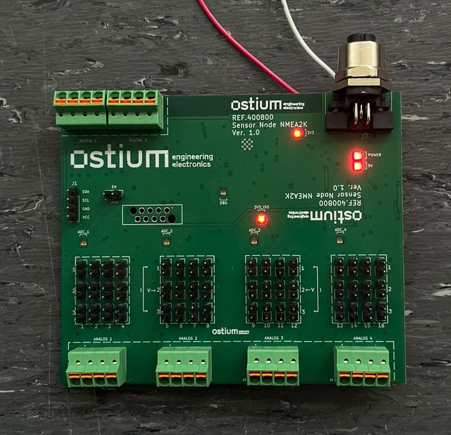

Voltar ao portefólio
Projeto de estágio · OSTIUM
Módulo de aquisição de dados para integração em sistemas NMEA 2000
Desenvolvimento de uma placa eletrónica capaz de adquirir sinais analógicos e digitais, processar os valores localmente e disponibilizar os dados através de CAN e MQTT.
Protótipo físico

PCB desenvolvida e testada
Enquadramento
O problema
Modernizar a instrumentação de uma embarcação não implica necessariamente substituir todos os sensores existentes.
Integrar sensores convencionais numa rede digital
Muitas embarcações continuam equipadas com sensores analógicos utilizados para medir nível, pressão, temperatura e outras grandezas.
O objetivo foi desenvolver uma interface capaz de adquirir esses sinais, condicioná-los e prepará-los para integração num sistema baseado em NMEA 2000.
Diferentes sinais
Entradas em tensão, corrente e sinais digitais com diferentes níveis elétricos.
Ambiente exigente
Ruído eletromagnético, transitórios elétricos e diferenças entre referências de massa.
Integração
Comunicação local através de CAN e monitorização remota através de Wi-Fi e MQTT.
Arquitetura
Fluxo funcional
A arquitetura separou a aquisição, o condicionamento, o processamento local e as interfaces de comunicação.
Sensores
Sinais analógicos de tensão e corrente e entradas digitais provenientes da embarcação.
Condicionamento
Divisores de tensão, resistências de shunt, proteção elétrica e seleção através de jumpers.
Processamento
Quatro ADS1115 comunicam por I²C com o ESP32, responsável pelo processamento dos dados.
Comunicação
Disponibilização dos dados através de CAN e publicação remota através de MQTT.
Implementação
Hardware e firmware
HW
Eletrónica
Hardware desenvolvido
Alimentação
Proteção TVS, filtro π, conversor buck para 5 V e regulador LDO para 3,3 V.
Aquisição analógica
Dezasseis canais configuráveis para sinais de 0–10 V ou 4–20 mA.
Aquisição digital
Oito entradas desacopladas através de optoacopladores, com lógica invertida.
Comunicação CAN
Interface física baseada no transceiver isolado ISO1044.
Construção
PCB compacta concebida no KiCad para montagem numa caixa de calha DIN.
FW
Sistemas embebidos
Firmware desenvolvido
Estrutura modular
Separação entre aquisição analógica, entradas digitais, CAN, MQTT, armazenamento e configuração.
Configuração persistente
Utilização da memória NVS para guardar parâmetros após reinício ou perda de alimentação.
Interface série
Comandos para diagnóstico, alteração de parâmetros e configuração da placa.
MQTT
Publicação periódica das entradas analógicas e digitais numa mensagem JSON.
Dashboard
Página Web auxiliar para acompanhar leituras e estados das comunicações.
Validação experimental
Testes realizados
Os subsistemas foram testados individualmente antes da integração global.
Verificação das tensões de alimentação e do funcionamento dos principais blocos da PCB.
Deteção dos quatro ADS1115 e observação dos sinais SDA e SCL através do osciloscópio.
Ensaios em tensão a 10 V e em corrente a 18,5 mA nos dezasseis canais.
Aplicação de 24 V para confirmar os optoacopladores e a lógica invertida.
Ligação à rede e publicação remota das leituras adquiridas através de mensagens JSON.
Transmissão e receção de tramas CAN entre dois módulos utilizando identificadores de 29 bits.


Engenharia na prática
Um problema identificado durante os testes
Durante os primeiros ensaios, o barramento CAN não apresentou os níveis elétricos esperados.
A análise do circuito permitiu concluir que o lado CAN do transceiver ISO1044 estava a ser alimentado com 3,3 V isolados, apesar de necessitar de uma alimentação compreendida entre 4,5 V e 5,5 V.
O conversor DC/DC isolado foi substituído por uma versão com saída de 5 V. Após esta correção, as duas placas transmitiram e receberam mensagens sem erros de comunicação.
Resultado
Uma primeira versão funcional e validada por subsistemas
O projeto demonstrou o funcionamento da aquisição analógica e digital, do processamento local, da comunicação MQTT e da camada CAN entre duas placas.
A integração completa numa rede NMEA 2000 real, com equipamentos comerciais e PGNs finais da aplicação, permaneceu como etapa futura.